# load FuseSOM
library(FuseSOM)3 Cell Annotation
Steps:
- Rationale behind clustering vs annotation
- How to cluster cells (FuseSOM)
- How to annotate clusters (pheatmap)
- How to annotate cells (scClassify)
- How to select a reference dataset (scClassify)
3.1 Which package should I use? Clustering vs Annotation
Labeling the identity of your cells is a key step in any spatial processing protocol in order to determine differential cell type compositions and changes which occur in specific cell types during disease. However, the method by which this is done can differ from study to study. Here, we provide two packages capable of either cell type clustering (FuseSOM) or cell type annotation (scClassify).
Clustering is an unsupervised method of labelling cells. This means that an algorithm separates out clusters of cells based purely off their marker expression, and the subsequent labeling of these clusters must be done with some biological domain knowledge. Cell annotation is a supervised method which requires a separate, reference dataset. The algorithm then uses that reference dataset to determine the identity of each of your cell types, thereby labelling your cells in the process. There are advantages and disadvantages to both, and the choice of one or the other will be discussed in this chapter. First we’ll walk through how to run both of these packages, and then we’ll discuss how to choose between FuseSOM and scClassify
3.2 FuseSOM: Cell clustering
A correlation based multiview self organizing map for the characterization of cell types (FuseSOM) is a tool for unsupervised clustering. FuseSOM is robust and achieves high accuracy by combining a Self Organizing Map architecture and a Multiview integration of correlation based metrics to cluster highly multiplexed in situ imaging cytometry assays. The FuseSOM pipeline has been streamlined and accepts currently used data structures including SingleCellExperiment and SpatialExperiment objects as well as DataFrames.
3.2.1 FuseSOM Matrix Input
If you have a matrix containing expression data that was QCed and normalised by some other tool, the next step is to run the FuseSOM algorithm.This can be done by calling the runFuseSOM() function which takes in the matrix of interest where the columns are markers and the rows are observations, the makers of interest (if this is not provided, it is assumed that all columns are markers), and the number of clusters.
Next we will load in the Risom et al dataset and run it through the FuseSOM pipeline. This dataset profiles the spatial landscape of ductal carcinoma in situ (DCIS), which is a pre-invasive lesion that is thought to be a precursor to invasive breast cancer (IBC). The key conclusion of this manuscript (amongst others) is that spatial information about cells can be used to predict disease progression in patients.We will also be using the markers used in the original study.
# load in the data
data("risom_dat")
# define the markers of interest
risomMarkers <- c('CD45','SMA','CK7','CK5','VIM','CD31','PanKRT','ECAD',
'Tryptase','MPO','CD20','CD3','CD8','CD4','CD14','CD68','FAP',
'CD36','CD11c','HLADRDPDQ','P63','CD44')
# we will be using the manual_gating_phenotype as the true cell type to gauge
# performance
names(risom_dat)[names(risom_dat) == 'manual_gating_phenotype'] <- 'CellType'Now that we have loaded the data and define the markers of interest. We can run the FuseSOM algorithm. We have provided a function runFuseSOM that runs the pipeline from top to bottom and returns the cluster labels as well as the Self Organizing Map model.
risomRes <- runFuseSOM(data = risom_dat, markers = risomMarkers,
numClusters = 23)You have provided a dataset of class data.frameEverything looks good. Now running the FuseSOM algorithmNow Generating the Self Organizing Map GridOptimal Grid Size is: 8Now Running the Self Organizing Map ModelNow Clustering the PrototypesLoading required namespace: fastclusterNow Mapping Clusters to the Original DataThe Prototypes have been Clustered and Mapped SuccessfullyThe FuseSOM algorithm has completed successfullyLets look at the distribution of the clusters.
# get the distribution of the clusters
table(risomRes$clusters)/sum(table(risomRes$clusters))
cluster_1 cluster_10 cluster_11 cluster_12 cluster_13 cluster_14
0.323602021 0.035968538 0.005439775 0.021443334 0.061100586 0.026596050
cluster_15 cluster_16 cluster_17 cluster_18 cluster_19 cluster_2
0.020582156 0.032624297 0.024931106 0.076128143 0.015802618 0.014927087
cluster_20 cluster_21 cluster_22 cluster_23 cluster_3 cluster_4
0.049962682 0.009185900 0.051771156 0.066913538 0.004923068 0.014108968
cluster_5 cluster_6 cluster_7 cluster_8 cluster_9
0.040776783 0.064444827 0.020854863 0.010032725 0.007879780 Looks like cluster_1 has about \(32\%\) of the cells which is interesting. Next, lets generate a heatmap of the marker expression for each cluster.
risomHeat <- FuseSOM::markerHeatmap(data = risom_dat, markers = risomMarkers,
clusters = risomRes$clusters, clusterMarkers = TRUE)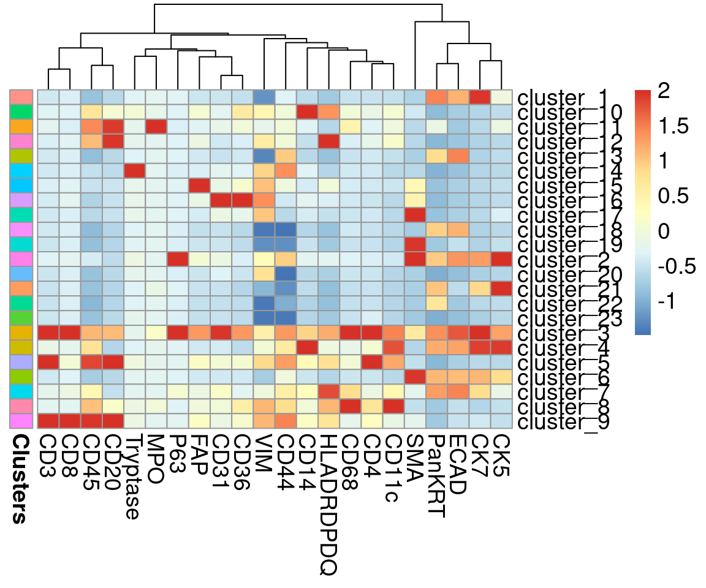
3.2.2 Using FuseSOM to estimate the number of clusters
FuseSOM also provides functionality for estimating the number of clusters in a dataset using three classes of methods including:
- Discriminant based method.
- A method developed in house based on discriminant based maximum clusterability projection pursuit
- Distance based methods which includes:
- The Gap Statistic
- The Jump Statistic
- The Slope Statistic
- The Within Cluster Dissimilarity Statistic
- The Silhouette Statistic
We can estimate the number of clusters using the estimateNumCluster. Run help(estimateNumCluster) to see it’s complete functionality.
# lets estimate the number of clusters using all the methods
# original clustering has 23 clusters so we will set kseq from 2:25
# we pass it the som model generated in the previous step
risomKest <- estimateNumCluster(data = risomRes$model, kSeq = 2:25,
method = c("Discriminant", "Distance"))Now Computing the Number of Clusters using Discriminant AnalysisNow Computing The Number Of Clusters Using Distance AnalysisWe can then use this result to determine the best number of clusters for this dataset based on the different metrics. The FuseSOM package provides a plotting function (optiPlot) which generates an elbow plot with the optimal value for the number of clusters for the distance based methods. See below
# what is the best number of clusters determined by the discriminant method?
# optimal number of clusters according to the discriminant method is 7
risomKest$Discriminant [1] 7# we can plot the results using the optiplot function
pSlope <- optiPlot(risomKest, method = 'slope')
pSlope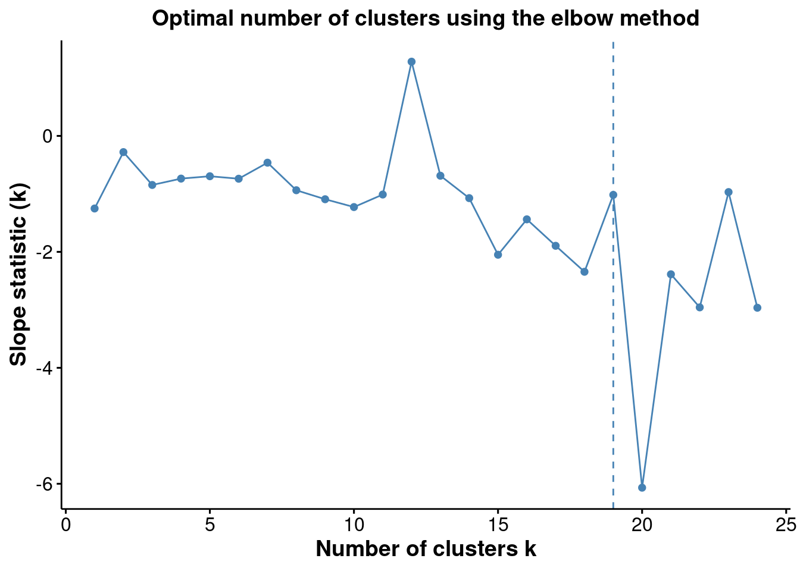
pJump <- optiPlot(risomKest, method = 'jump')
pJump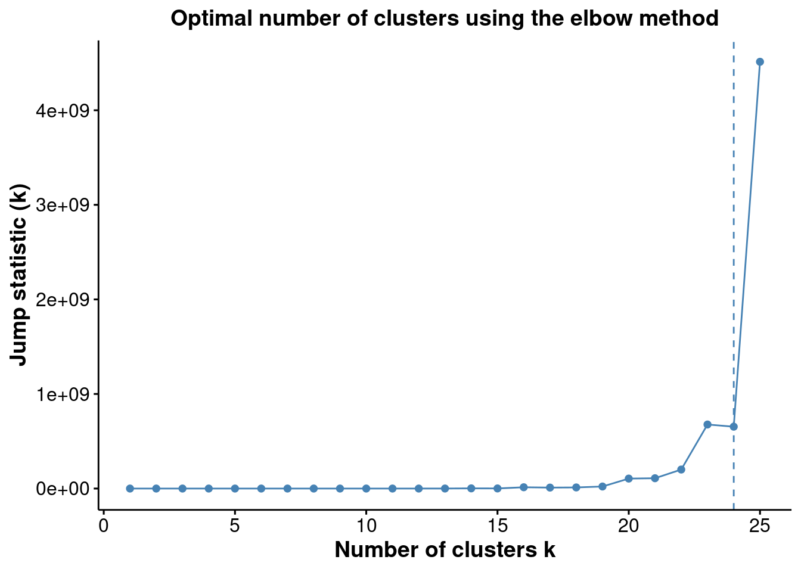
pWcd <- optiPlot(risomKest, method = 'wcd')
pWcd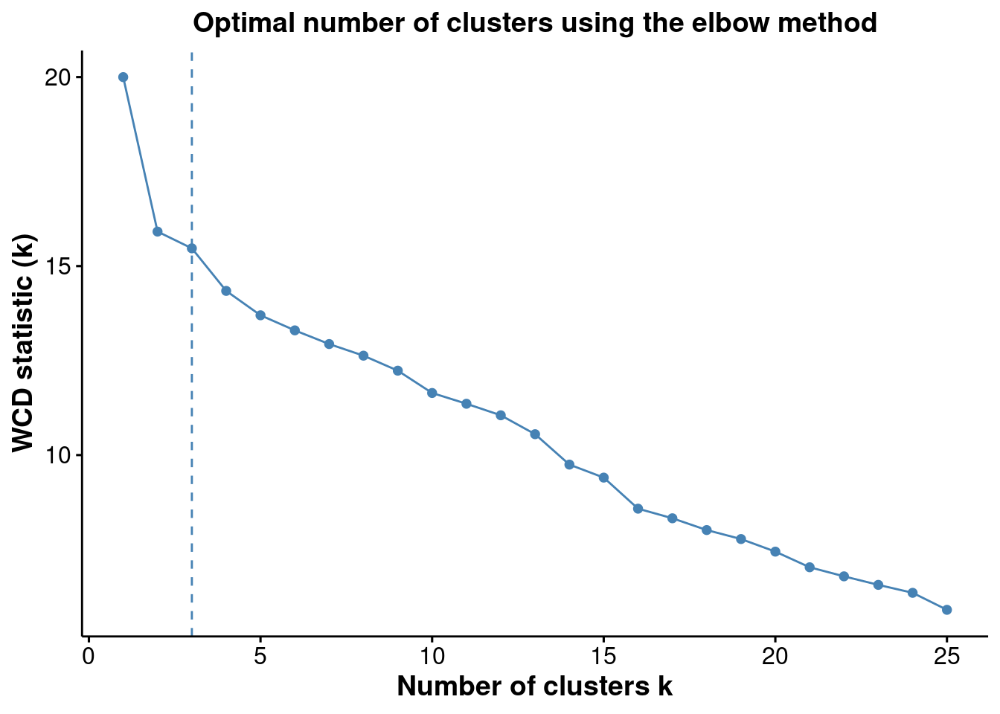
pGap <- optiPlot(risomKest, method = 'gap')
pGap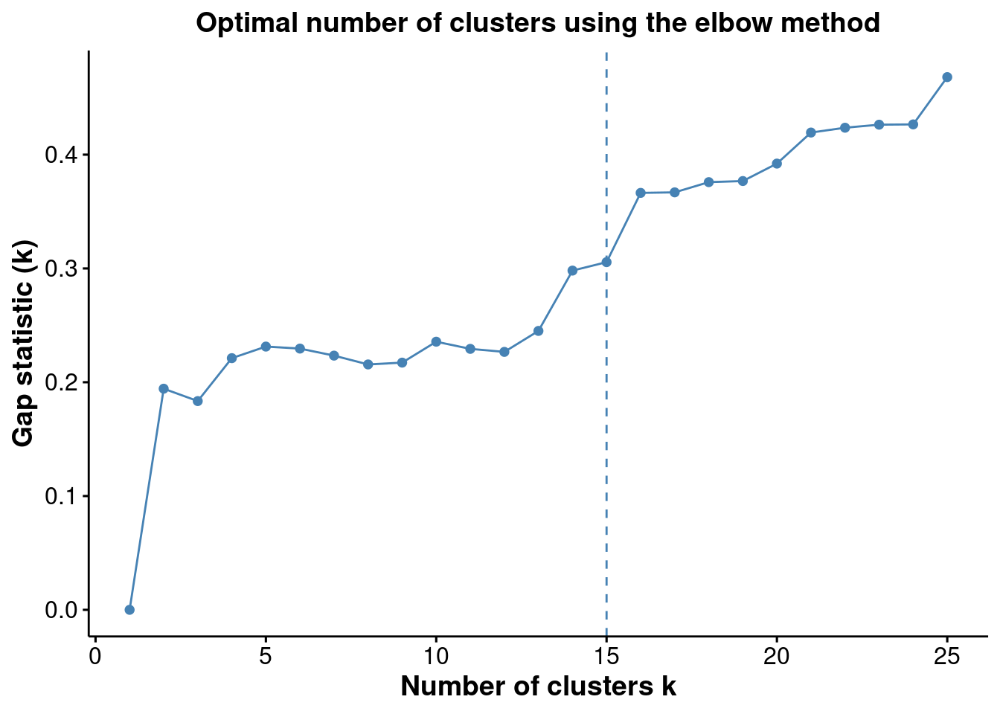
pSil <- optiPlot(risomKest, method = 'silhouette')
pSil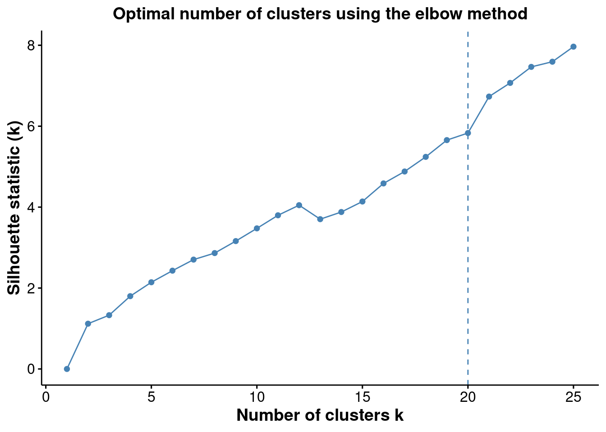
From the plots, we see that the Jump statistics almost perfectly capture the number of clusters. The Gap method is a close second with \(15\) clusters. All the other methods significantly underestimates the number of clusters.
3.2.3 FuseSOM Single Cell Epxeriment object as input.
The FuseSOM algorithm is also equipped to take in a SingleCellExperiment object as input. The results of the pipeline will be written to either the metada or the colData fields. See below.
First we create a SingleCellExperiment object
library(SingleCellExperiment)
# create a singelcellexperiment object
colDat <- risom_dat[, setdiff(colnames(risom_dat), risomMarkers)]
sce <- SingleCellExperiment(assays = list(counts = t(risom_dat)),
colData = colDat)
sceclass: SingleCellExperiment
dim: 23 69672
metadata(0):
assays(1): counts
rownames(23): CD45 SMA ... CD44 CellType
rowData names(0):
colnames: NULL
colData names(1): X
reducedDimNames(0):
mainExpName: NULL
altExpNames(0):Next we pass it to the runFuseSOM() function. Here, we can provide the assay in which the data is stored and what name to store the clusters under in the colData section. Note that the Self Organizing Map that is generated will be stored in the metadata field.
risomRessce <- runFuseSOM(sce, markers = risomMarkers, assay = 'counts',
numClusters = 23, verbose = FALSE)You have provided a dataset of class SingleCellExperimentEverything looks good. Now running the FuseSOM algorithmNow Generating the Self Organizing Map GridOptimal Grid Size is: 8Now Running the Self Organizing Map ModelNow Clustering the PrototypesNow Mapping Clusters to the Original DataThe Prototypes have been Clustered and Mapped SuccessfullyThe FuseSOM algorithm has completed successfullycolnames(colData(risomRessce))[1] "X" "clusters"names(metadata(risomRessce))[1] "SOM"Notice how the there is now a clusters column in the colData and SOM field in the metadata. You can run this function again with a new set of cluster number. If you provide a new name for the clusters, it will be stored under that new column, else, it will overwrite the current clusters column. Running it again on the same object will overwrite the SOM field in the metadata.
Just like before, lets plot the heatmap of the resulting clusters across all markers.
data <- risom_dat[, risomMarkers] # get the original data used
clusters <- colData(risomRessce)$clusters # extract the clusters from the sce object
# generate the heatmap
risomHeatsce <- markerHeatmap(data = risom_dat, markers = risomMarkers,
clusters = clusters, clusterMarkers = TRUE)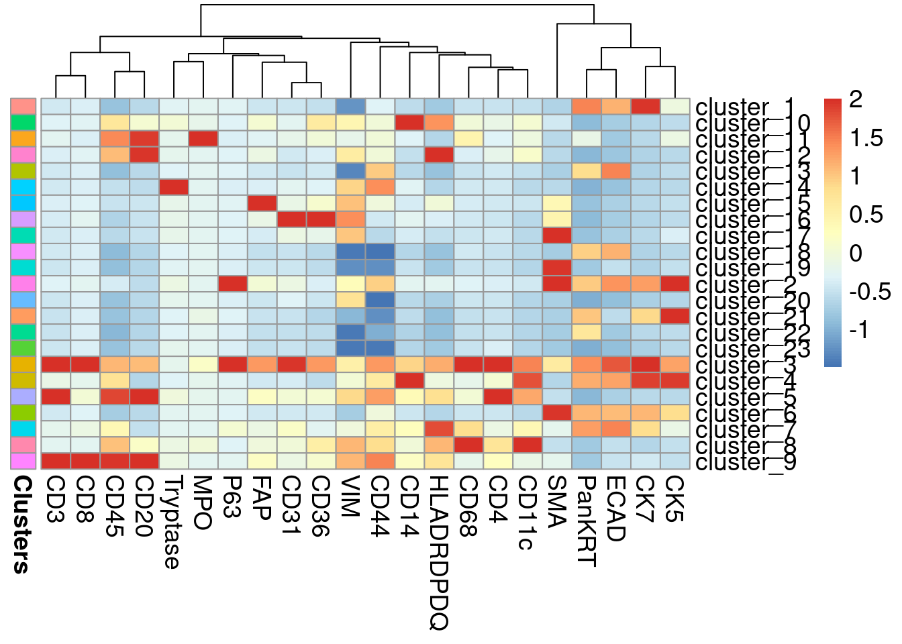
3.2.4 Using FuseSOM to estimate the number of clusters for single cell experiment objects
Just like before, we can estimate the number of clusters
# lets estimate the number of clusters using all the methods
# original clustering has 23 clusters so we will set kseq from 2:25
# now we pass it a singlecellexperiment object instead of the som model as before
# this will return a singelcellexperiment object where the metatdata contains the
# cluster estimation information
risomRessce <- estimateNumCluster(data = risomRessce, kSeq = 2:25,
method = c("Discriminant", "Distance"))You have provided a dataset of class: SingleCellExperimentNow Computing the Number of Clusters using Discriminant AnalysisNow Computing The Number Of Clusters Using Distance Analysisnames(metadata(risomRessce))[1] "SOM" "clusterEstimation"Notice how the metadata now contains a clusterEstimation field which holds the results from the estimateNumCluster() function
We can assess the results in a similar fashion as before
# what is the best number of clusters determined by the discriminant method?
# optimal number of clusters according to the discriminant method is 8
metadata(risomRessce)$clusterEstimation$Discriminant [1] 10# we can plot the results using the optiplot function
pSlope <- optiPlot(risomRessce, method = 'slope')You have provided a dataset of class: SingleCellExperimentpSlope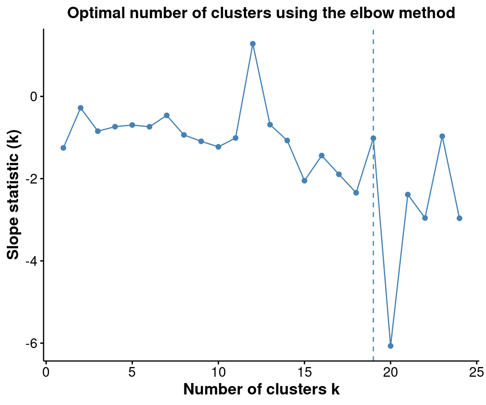
pJump <- optiPlot(risomRessce, method = 'jump')You have provided a dataset of class: SingleCellExperimentpJump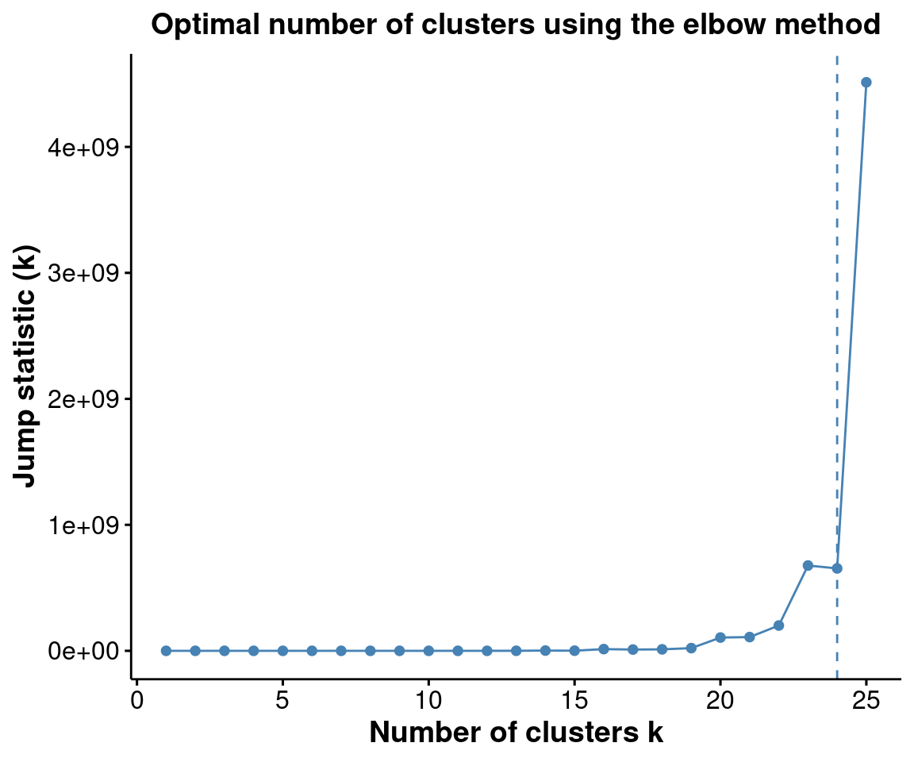
pWcd <- optiPlot(risomRessce, method = 'wcd')You have provided a dataset of class: SingleCellExperimentpWcd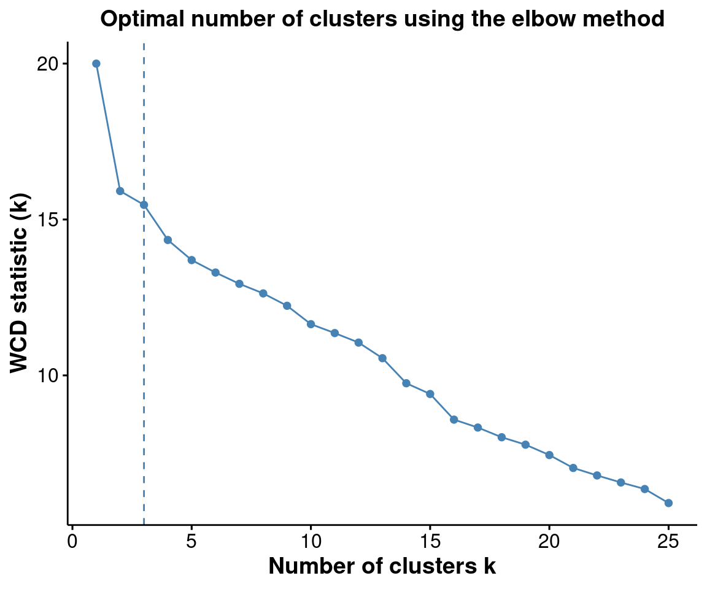
pGap <- optiPlot(risomRessce, method = 'gap')You have provided a dataset of class: SingleCellExperimentpGap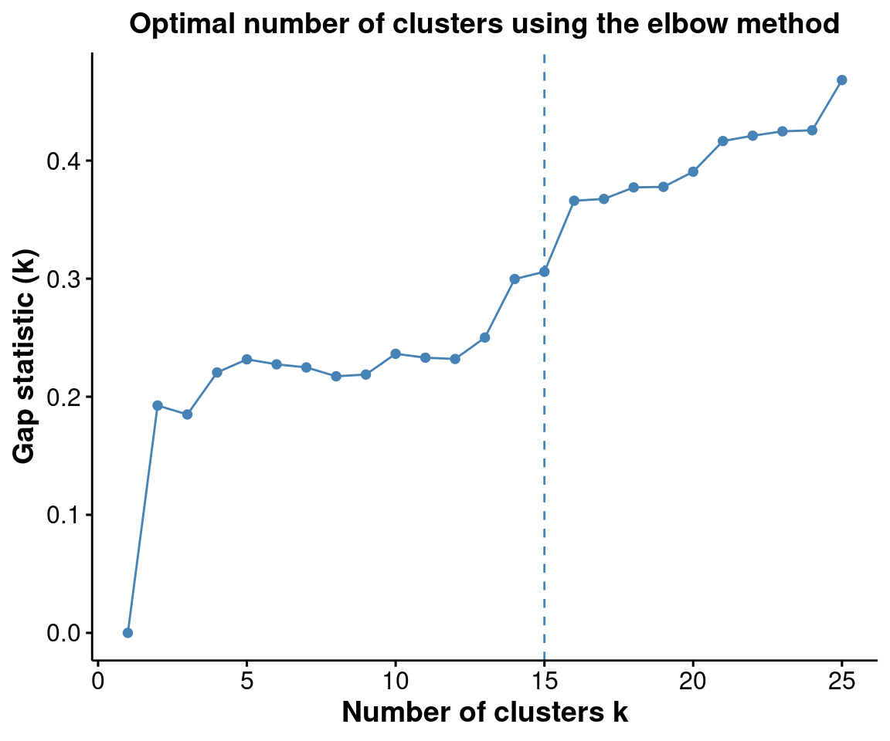
pSil <- optiPlot(risomRessce, method = 'silhouette')You have provided a dataset of class: SingleCellExperimentpSil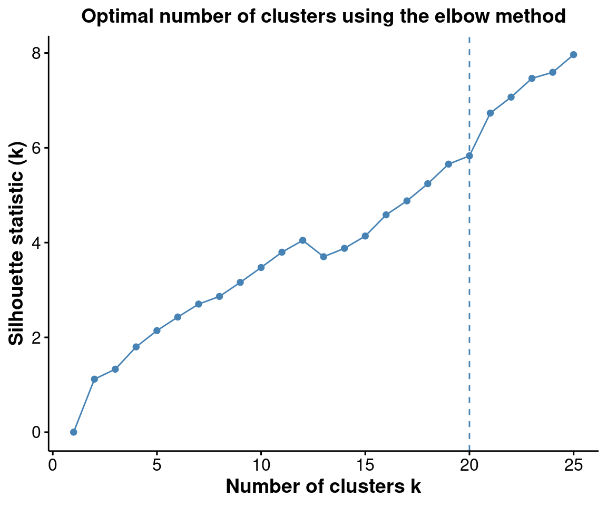
Again, we see that the Jump statistics almost perfectly capture the number of clusters. The Gap method is a close second with \(15\) clusters. All the other methods significantly underestimates the number of clusters.
3.3 scClassify: Cell annotation
3.4 Choosing between clustering and annotation
3.5 sessionInfo
sessionInfo()R version 4.4.1 (2024-06-14)
Platform: x86_64-pc-linux-gnu
Running under: Debian GNU/Linux 12 (bookworm)
Matrix products: default
BLAS: /usr/lib/x86_64-linux-gnu/openblas-pthread/libblas.so.3
LAPACK: /usr/lib/x86_64-linux-gnu/openblas-pthread/libopenblasp-r0.3.21.so; LAPACK version 3.11.0
locale:
[1] LC_CTYPE=C.UTF-8 LC_NUMERIC=C LC_TIME=C.UTF-8
[4] LC_COLLATE=C.UTF-8 LC_MONETARY=C.UTF-8 LC_MESSAGES=C.UTF-8
[7] LC_PAPER=C.UTF-8 LC_NAME=C LC_ADDRESS=C
[10] LC_TELEPHONE=C LC_MEASUREMENT=C.UTF-8 LC_IDENTIFICATION=C
time zone: Australia/Sydney
tzcode source: system (glibc)
attached base packages:
[1] stats4 stats graphics grDevices utils datasets methods
[8] base
other attached packages:
[1] SingleCellExperiment_1.28.1 SummarizedExperiment_1.36.0
[3] Biobase_2.66.0 GenomicRanges_1.58.0
[5] GenomeInfoDb_1.42.0 IRanges_2.40.0
[7] S4Vectors_0.44.0 BiocGenerics_0.52.0
[9] MatrixGenerics_1.18.0 matrixStats_1.4.1
[11] FuseSOM_1.8.0
loaded via a namespace (and not attached):
[1] mnormt_2.1.1 permute_0.9-7 rlang_1.1.4
[4] magrittr_2.0.3 compiler_4.4.1 mgcv_1.9-1
[7] flexmix_2.3-19 analogue_0.17-7 vctrs_0.6.5
[10] stringr_1.5.1 pkgconfig_2.0.3 crayon_1.5.3
[13] fastmap_1.2.0 backports_1.5.0 XVector_0.46.0
[16] labeling_0.4.3 utf8_1.2.4 rmarkdown_2.29
[19] UCSC.utils_1.2.0 purrr_1.0.2 coop_0.6-3
[22] xfun_0.49 modeltools_0.2-23 zlibbioc_1.52.0
[25] jsonlite_1.8.9 DelayedArray_0.32.0 fpc_2.2-13
[28] psych_2.4.6.26 broom_1.0.7 parallel_4.4.1
[31] prabclus_2.3-4 cluster_2.1.6 R6_2.5.1
[34] profileModel_0.6.1 stringi_1.8.4 RColorBrewer_1.1-3
[37] car_3.1-3 diptest_0.77-1 Rcpp_1.0.13-1
[40] knitr_1.49 Matrix_1.7-1 splines_4.4.1
[43] nnet_7.3-19 tidyselect_1.2.1 rstudioapi_0.17.1
[46] abind_1.4-8 vegan_2.6-8 brglm_0.7.2
[49] lattice_0.22-6 tibble_3.2.1 withr_3.0.2
[52] evaluate_1.0.1 gridGraphics_0.5-1 proxy_0.4-27
[55] kernlab_0.9-33 mclust_6.1.1 pillar_1.9.0
[58] ggpubr_0.6.0 carData_3.0-5 generics_0.1.3
[61] sp_2.1-4 ggplot2_3.5.1 munsell_0.5.1
[64] scales_1.3.0 princurve_2.1.6 class_7.3-22
[67] glue_1.8.0 pheatmap_1.0.12 tools_4.4.1
[70] robustbase_0.99-4-1 ggsignif_0.6.4 fs_1.6.5
[73] fastcluster_1.2.6 grid_4.4.1 tidyr_1.3.1
[76] colorspace_2.1-1 nlme_3.1-166 GenomeInfoDbData_1.2.13
[79] Formula_1.2-5 cli_3.6.3 DataVisualizations_1.3.2
[82] FCPS_1.3.4 fansi_1.0.6 S4Arrays_1.6.0
[85] dplyr_1.1.4 DEoptimR_1.1-3 gtable_0.3.6
[88] rstatix_0.7.2 yulab.utils_0.1.8 digest_0.6.37
[91] SparseArray_1.6.0 ggplotify_0.1.2 htmlwidgets_1.6.4
[94] farver_2.1.2 htmltools_0.5.8.1 lifecycle_1.0.4
[97] httr_1.4.7 MASS_7.3-61